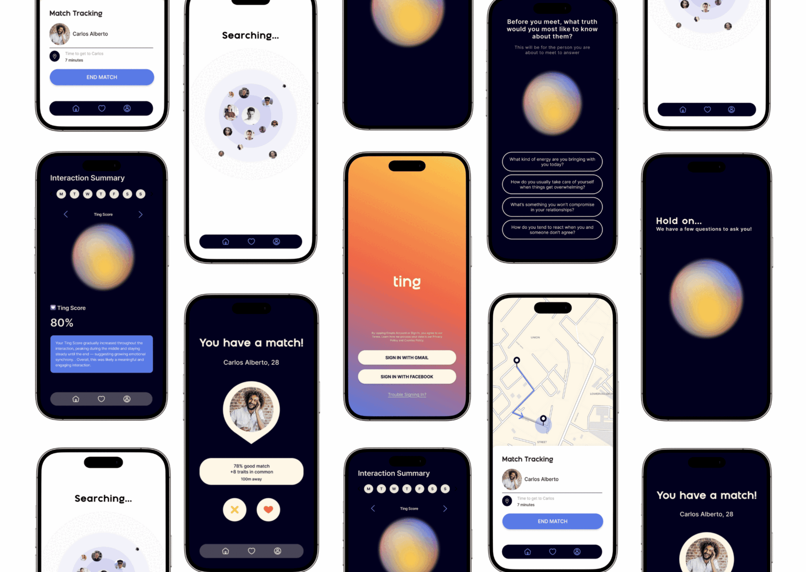
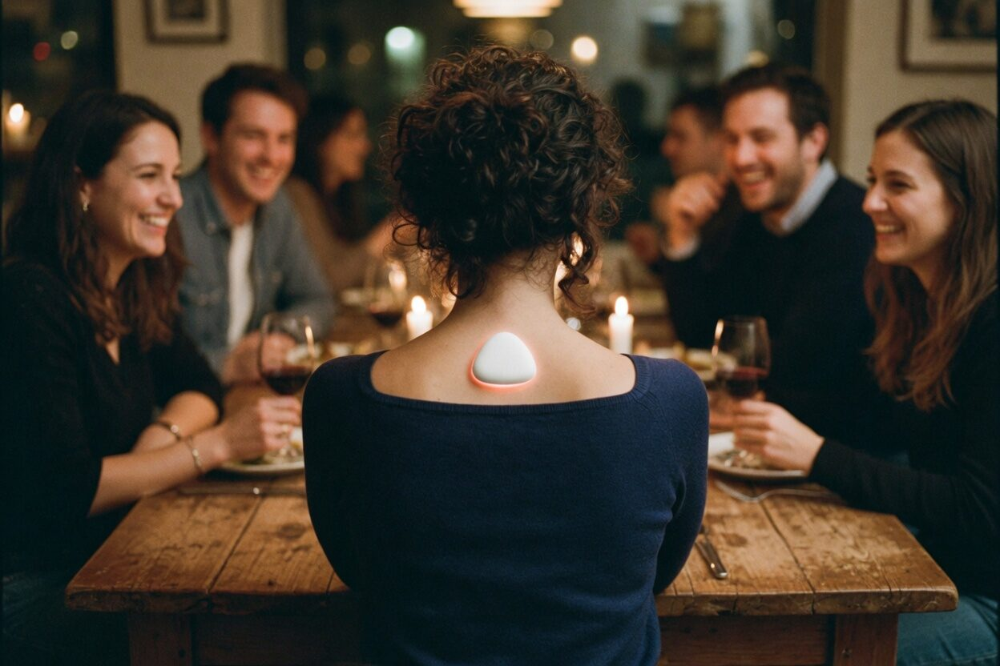
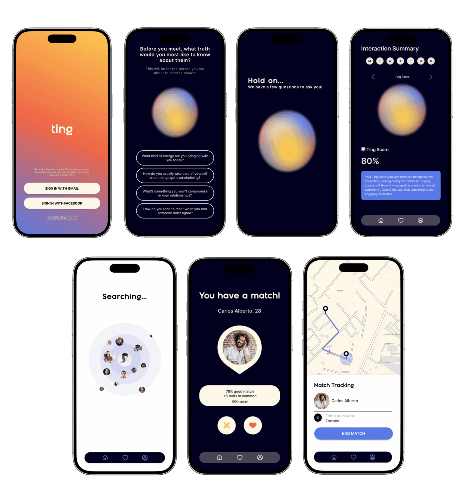
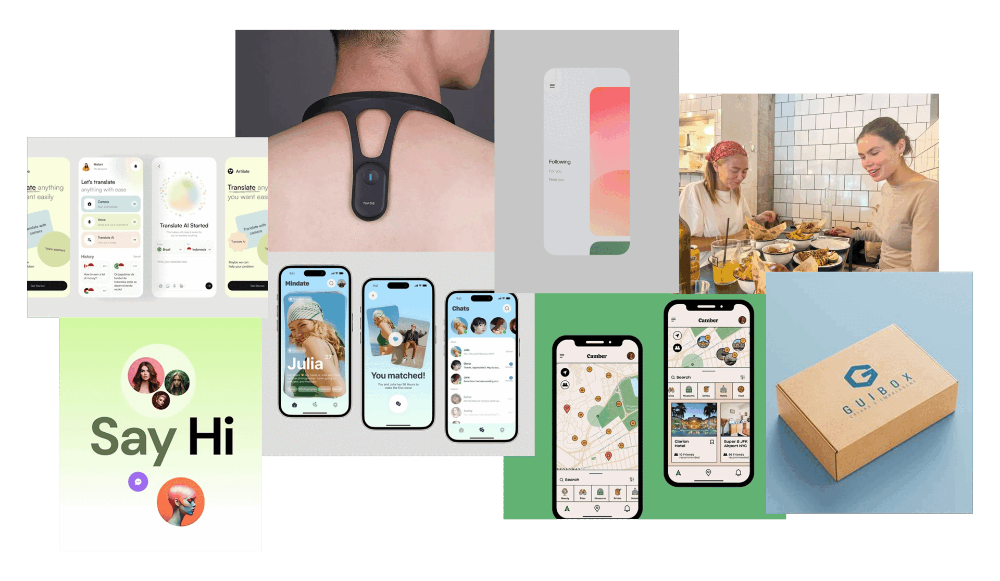
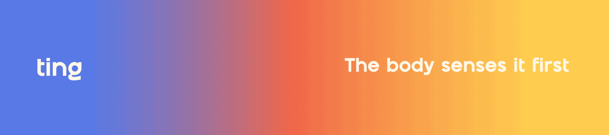
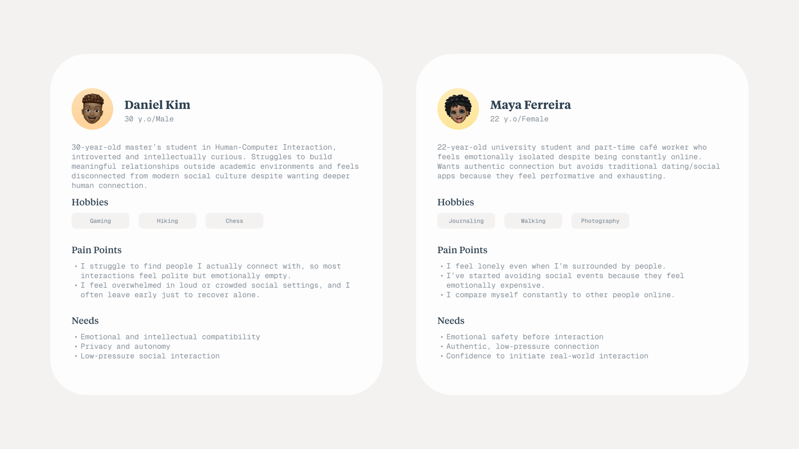
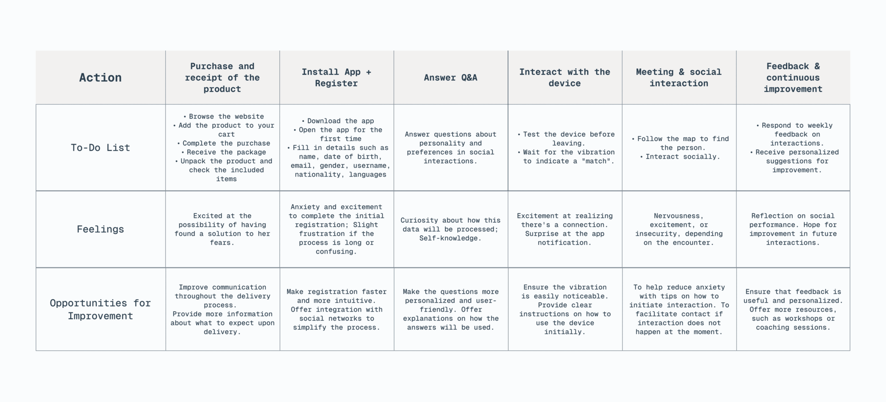
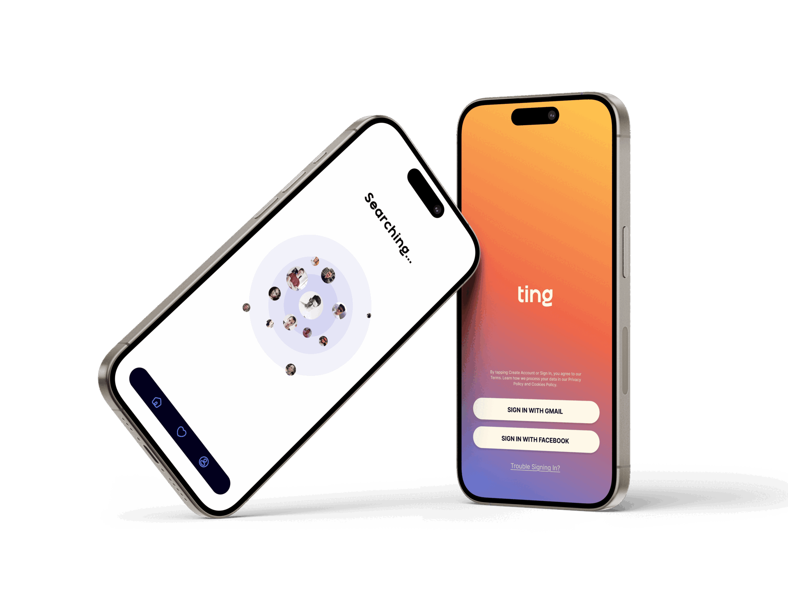
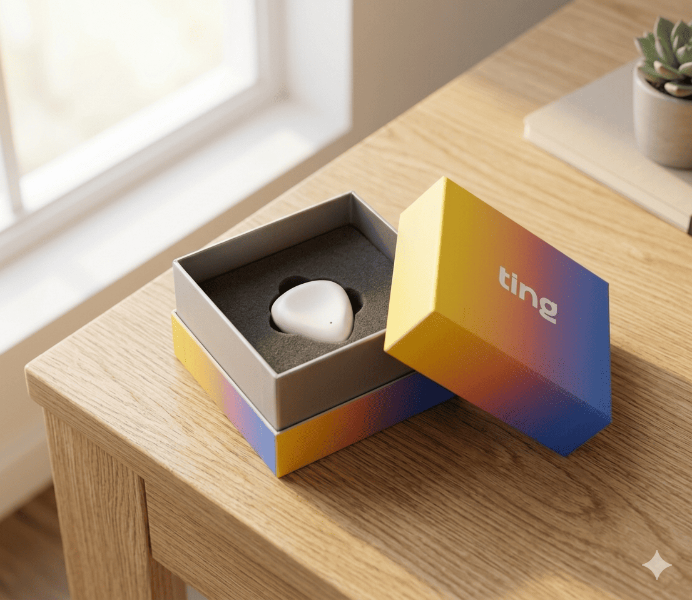

Overview
Ting is a hybrid wearable-app ecosystem designed to restore the intimacy of real-world encounters. Worn on the upper spine — near the vagus nerve — the device vibrates subtly when in proximity to an emotionally compatible user, as determined by physiological signals processed by an adaptive AI. There are no swipes, no profiles, no images. The body becomes the interface.
The project was developed for the Interaction Design course at FBAUL, grounded in Polyvagal Theory, affective computing, and a mixed-methods research phase with 93 participants. It proposes a paradigm shift: from performative digital socialisation toward presence, embodiment, and emotional resonance.
Not another app — a new social language. Presence over performance. The body senses it first.


The Problem
Despite being the most digitally connected generation in history, Gen Z is paradoxically the loneliest. Raised in an environment of constant online presence, these individuals navigate relationships through screens, algorithms, and curated personas — yet often fail to experience authentic human closeness. The ease of swiping has replaced the challenge of real-life engagement.
Feel lonely frequently
Gen Z respondents report frequent feelings of loneliness, the highest rate of any generation. Cigna, 2020.
Social needs unmet
More than half have unmet social needs despite being always online. McKinsey, 2023.
Abandon social apps
Abandon dating or friendship apps because interactions feel artificial or forced. Survey, 2025.
Social apps promise connection but deliver performance, comparison, and overload. The psychological cost is high: increased anxiety, poor emotional regulation, and a growing sense of inadequacy. The problem isn’t lack of technology — it’s the absence of a safe emotional space to connect.
① Research
Theoretical Foundations
The project is grounded in two pillars: affective neuroscience and a critical analysis of how technology shapes human relationships. The central theoretical framework is Polyvagal Theory, proposed by neuroscientist Stephen Porges (1995), which explains how the vagus nerve regulates emotional states and social engagement through physiological feedback loops.
The theory posits that our nervous system constantly scans the environment for cues of safety. When such cues are detected — including soft vocal tones, eye contact, or gentle vibrations — the ventral vagal complex is activated, enabling social openness and reducing defensive responses like anxiety and withdrawal. Ting uses this mechanism intentionally: worn on the upper spine, the device activates this social system through subtle vibration, before a word is spoken.
User Research — Survey
To ground the project in real user needs, we conducted a mixed-methods survey with 93 participants, mostly aged 18 to 25, of whom 83% identified as students or student-workers. A significant majority reported experiencing social anxiety — particularly when initiating in-person interactions — yet clear interest in deeper, value-driven, real-world connections.
Two findings shaped the direction of the project: 46% of respondents reported difficulty starting and maintaining conversations, and 41% struggled to build meaningful long-term connections. At the same time, 51% identified deep friendship as the type of connection they most sought — not casual encounters or romantic matches. These numbers pointed to a gap that existing platforms weren’t filling: the need for low-pressure, authentic initiation.
Benchmarking
Ting was designed in dialogue with a range of existing tools — each revealing a gap the project aimed to fill. Bond Touch and Neosensory Buzz use vibration to simulate presence, but assume pre-existing relationships. Replika AI and Limitless Pendant advance affective computing but remain screen-bound and productivity-driven. Traditional dating apps — Tinder, Hinge, Bumble BFF — rely on swipe mechanics and visual-first judgment: exactly the dynamics Ting was designed to escape. Life360’s spatial interaction model informed the Match Tracking feature, but its focus on existing groups left the space for new connection open.
The gap was clear: no existing tool combined embodied interaction, emotional AI, and real-world social initiation — without a visual interface.

② Solution
How it works
Ting is a hybrid system composed of two elements: a small wearable device placed on the upper spine, and a complementary mobile app. The wearable acts as a real-time emotional radar; the app functions as a private affective log — not a social feed.
After account creation, the user completes a brief personality questionnaire to train their personal AI. The wearable then collects biometric data in real time and compares affective profiles when another Ting user is nearby. If compatibility is detected, both devices vibrate gently — discreet enough not to demand action, but distinct enough to spark curiosity. A pop-up then appears in the app, inviting the user to decide whether to meet.
If accepted, the app opens a map view showing the other user’s approximate location, allowing a spontaneous, real-world encounter. If declined, life continues. No obligation, no notification history, no digital footprint of the interaction.
Low input, high resonance. The app is a reflection tool; the wearable is the social radar. The most important interaction is the one the screen doesn’t mediate.
Visual Identity
The name Ting captures that first moment — the soft vibration, the almost imperceptible cue that something meaningful is near. It doesn’t explain. It signals.
The brand gradient moves from deep blue through lilac, coral, and soft orange to warm yellow. The colour system is drawn from emotional thermography and the structure of Paul Ekman’s Atlas of Emotions. Blue evokes regulation and calm; orange and coral suggest emotional activation; yellow signals openness and curiosity. Together, they reflect the full spectrum of what the body might feel when real connection is near.

③ Design Process
Personas
From the survey data, three user profiles emerged that shaped every UX decision: introverted young adults seeking non-verbal social cues; users balancing emotional vulnerability with self-protection; and people who crave genuine connection but need time and subtlety to build it. All three share the same core need — a way to initiate connection that doesn’t begin with performance.

Interaction model & UX flow
The interaction model is intentionally minimalist. The app serves three functions only: reviewing emotional “highlight” moments from past interactions; adjusting preferences and boundary settings; and viewing a map-style history of meaningful encounters. The interface avoids all the dynamics of traditional social apps — no feeds, no messages, no photos.
The full flow runs: account creation → onboarding questionnaire (AI calibration) → wearable searching for nearby users → vibration signal → in-app match notification → optional map view → physical encounter → Interaction Summary with Ting Score. Post-interaction prompts — such as “What kind of energy are you bringing today?” — support emotional self-awareness and refine the AI model over time.

Prototyping & User Testing
The final phase brought Ting to high fidelity: detailed UI mockups for the mobile app and physical prototyping of the wearable device. An informal testing session with participants aged 18 to 25 assessed onboarding flow, interface intuitiveness, and emotional response to a simulated match event using a gentle vibration.
Feedback was overwhelmingly positive. The absence of swipes, profile images, and flashy buttons was consistently noted as calming and different. Participants described the experience as fluid, intuitive, and more human. Several described the concept as “natural” and “something I would want to try.” The main refinement needed: the meaning of the vibration should be made very clear early in onboarding to avoid confusion about what a match signal means.


④ Key Outcomes
Watch here the full video
⑤ Takeaways
Ting pushed me into territory I hadn’t expected: designing not for engagement, but for its absence. The most important interaction in this system is the one the app doesn’t mediate. That required a fundamental inversion of how UX is usually framed — instead of asking how to keep users in the interface, we asked how to get them out of it as quickly as possible.
Applying Polyvagal Theory to UX design taught me that the body is an interface in its own right. The most effective design sometimes means stepping back entirely and letting human connection come forward. It also demanded a rigorous ethical balance: collecting sensitive physiological data while building an experience that feels protective, not extractive. All data stored locally, all AI models personal and non-transferable — these weren’t afterthoughts, they were design decisions.
This project changed how I think about the role of technology in social contexts. The question stopped being how to make connections faster, and became how to make them safer. That shift in perspective is something I carry into every interaction design problem I approach now.
Conduct structured usability testing — not just informal sessions — with a protocol focused specifically on the meaning and readability of the haptic language. The vibration is Ting’s most critical design element, and it deserves dedicated testing beyond the onboarding flow. I would also explore accessibility from the start: what does Ting mean for users who experience touch or vibration differently?
© ellen damazio, 2026 — designed & coded